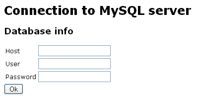
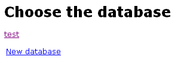

The development follows 3 steps :
This script is a "Karrigell service" that can be edited by the programmer
Connect to the url http://localhost/InstantSite/mysql ; you will be asked to enter the information to connect to the MySQL database : host name, user name and password

The next page shows the existing databases and has a link to create a new database

Click on this link and enter a new database name